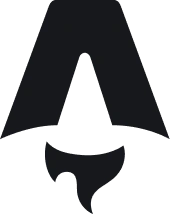

Product Designer UX/UI
Je conçois des applications métier et des sites web que l'on comprend du premier coup : de la recherche utilisateur au design system, puis avec les développeurs jusqu'à la mise en ligne.
Du besoin utilisateur à la mise en ligne.
Product Designer depuis 5 ans, je conçois des outils métier
(dashboards, back-office), des applications mobiles et des sites
e-commerce. Je mène la recherche, structure l'information, construis
les design systems et les prototypes, puis j'accompagne
l'intégration.
Ma pratique du développement front-end (React, JavaScript,
PHP, WordPress, PrestaShop) me permet de proposer des interfaces
réalistes à construire et de parler le même langage que les
développeurs.
En savoir plus
Expertises et outils
Ce que je fais
Recherche et tests
Entretiens, observation du terrain et tests d'utilisabilité avec les utilisateurs finaux.
Structure et design system
Arborescences, wireframes, user flows, composants et variantes en Atomic Design.
Prototypes et design reviews
Prototypes interactifs, présentations au client et itérations jusqu'à la validation.
Collaboration avec les devs
Je pars des contraintes techniques réelles et j'adapte le handoff à la façon de travailler de chaque équipe.
Outils

AstroProjets principaux
Proxidriver
Simplifier l'usage quotidien d'une application métier pour des livreurs. Refonte avec une navigation en 4 entrées, un design system et 3 itérations de prototype avec le client.
Noka Matcha
Alléger la page d'accueil d'une marque de matcha premium, clarifier le choix du produit et refléter la personnalité de sa fondatrice. Refonte guidée par un audit.
Trail & Tail
Aider les binômes coureur-chien à trouver des partenaires de course compatibles. Projet personnel : mon hypothèse de départ est remise en cause, le matching repose sur la complémentarité des chiens, pas sur leur ressemblance.
ProjectOS
Faire gagner du temps au lancement d'un projet, sans que le chef de projet perde le contrôle. Projet personnel : un copilote IA prépare le projet à partir du cahier des charges, le chef de projet valide. Le concept a pivoté des templates vers le copilote.
Autres projets
Les Jardins du Cambrésis
Rendre le site vitrine d'un paysagiste visible, lisible et rassurant pour un large public. Refonte en one page avec Astro, sans back-office, avec un SEO et une accessibilité soignés
Tiaa
Donner vie au logo d'une nouvelle marque de santé et d'hygiène pour marquer les esprits dès son lancement. Deux propositions de motion design.
Aether VR
Rendre la navigation d'une application de voyages en réalité virtuelle intuitive et immersive. UI, micro-interactions et prototype animé dans Figma.